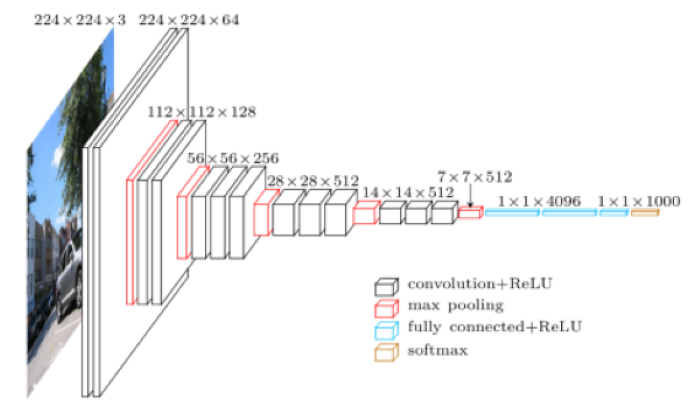
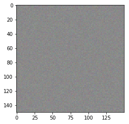
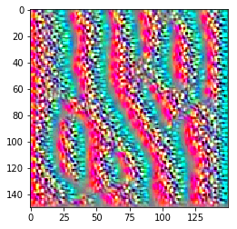
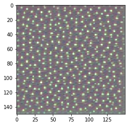
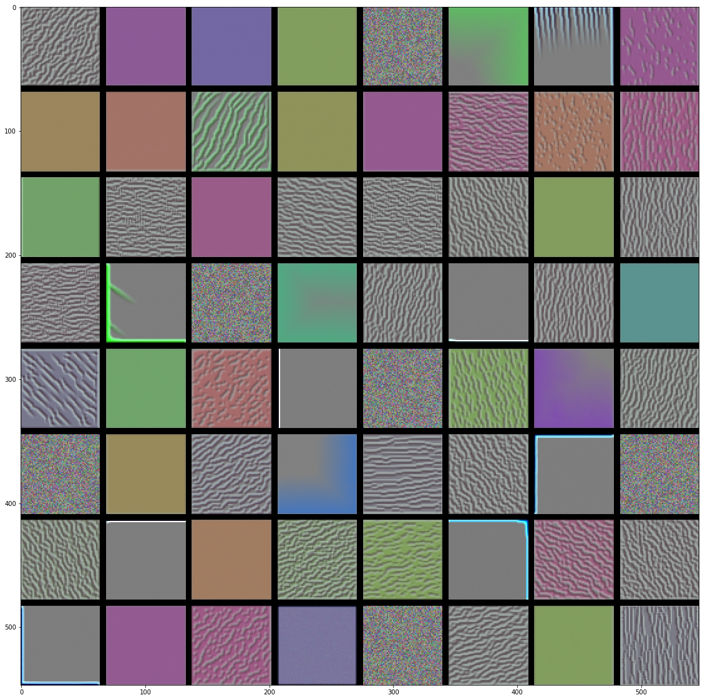
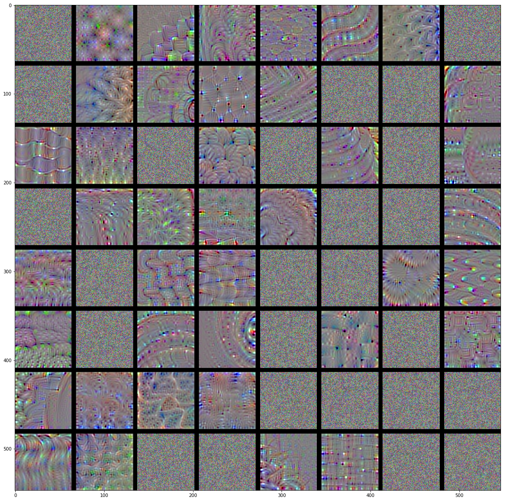

Interpretability: Find the Essence of Filters
%pylab inline
import tensorflow as tf
tf.logging.set_verbosity(tf.logging.ERROR)
from keras import backend as KPopulating the interactive namespace from numpy and matplotlib
Using TensorFlow backend.
Recall the general architecture of the VGG model (Notes here).
from IPython.display import Image
Image('images/vgg_long.png')
If we load up the keras implementation of the weights (ignoring the top layers, as we’re not actually going to be predicting anything)
from keras.applications import VGG16
model = VGG16(weights='imagenet',
include_top=False)… we can see that it’s very large.
model.summary()_________________________________________________________________
Layer (type) Output Shape Param #
=================================================================
input_1 (InputLayer) (None, None, None, 3) 0
_________________________________________________________________
block1_conv1 (Conv2D) (None, None, None, 64) 1792
_________________________________________________________________
block1_conv2 (Conv2D) (None, None, None, 64) 36928
_________________________________________________________________
block1_pool (MaxPooling2D) (None, None, None, 64) 0
_________________________________________________________________
block2_conv1 (Conv2D) (None, None, None, 128) 73856
_________________________________________________________________
block2_conv2 (Conv2D) (None, None, None, 128) 147584
_________________________________________________________________
block2_pool (MaxPooling2D) (None, None, None, 128) 0
_________________________________________________________________
block3_conv1 (Conv2D) (None, None, None, 256) 295168
_________________________________________________________________
block3_conv2 (Conv2D) (None, None, None, 256) 590080
_________________________________________________________________
block3_conv3 (Conv2D) (None, None, None, 256) 590080
_________________________________________________________________
block3_pool (MaxPooling2D) (None, None, None, 256) 0
_________________________________________________________________
block4_conv1 (Conv2D) (None, None, None, 512) 1180160
_________________________________________________________________
block4_conv2 (Conv2D) (None, None, None, 512) 2359808
_________________________________________________________________
block4_conv3 (Conv2D) (None, None, None, 512) 2359808
_________________________________________________________________
block4_pool (MaxPooling2D) (None, None, None, 512) 0
_________________________________________________________________
block5_conv1 (Conv2D) (None, None, None, 512) 2359808
_________________________________________________________________
block5_conv2 (Conv2D) (None, None, None, 512) 2359808
_________________________________________________________________
block5_conv3 (Conv2D) (None, None, None, 512) 2359808
_________________________________________________________________
block5_pool (MaxPooling2D) (None, None, None, 512) 0
=================================================================
Total params: 14,714,688
Trainable params: 14,714,688
Non-trainable params: 0
_________________________________________________________________
This tutorial is meant to shed some light on the types of intermediate features that these hidden layers are looking at.
Methodology Overview
Broadly, we know that training a Neural Network involves:
- Setting the model structure
- Defining the loss
- Minimizing that loss
Which means that, crucially, the connections from layer to layer are differentiable and aggregate to some comprehensive loss function.
A good intermediate filter can:
- “Spot a particular pattern in our image”
- Pass some information to the next layer that confirms “yeah, I saw this pattern”
Over multiple training steps, this information passed to the next layer is adjusted by performing gradient descent to arrive at a series of weights that minimize this filter’s contribution to the loss of the whole model.
The key mechanic we’re going to be using here basically up-ends this whole idea. Instead of using the gradient to go from image to “singular information value” to minimize loss, we’re going to multiply by this gradient to make adjustments to the image to maximize loss.
With enough repetition, this will give us an image with higher and higher loss for this filter, which translates in English to “an image tailor made to activate this particular filter.”
Visualizing One Filter of One Layer
So to get a ground-level intuition for how this all works, we’re going to zero in on one filter of one block.
Arbitrarily-chosen, we’ve got:
layer_name = 'block3_conv1'
filter_index = 27And so we grab the layer that we’re interested in examining
layer_output = model.get_layer(layer_name).outputIt’s got 256 different filters
layer_output.shapeTensorShape([Dimension(None), Dimension(None), Dimension(None), Dimension(256)])
So we’ll just look at the filter we’re interested in. We create an object called loss, which will be the outbound calculation for the loss that the network is trained to minimize.
loss = K.mean(layer_output[:, :, :, filter_index])Note: This isn’t the value of the loss– a cut-and-dry number– but instead, the variable that will hold the value of the loss as the network adjusts. We take the mean value to make the optimization more straight-forward.
type(loss)tensorflow.python.framework.ops.Tensor
loss.shapeTensorShape([])
Similarly, we define an object, grads, that will hold the value of the loss gradient, used in our repeated ascent step.
Looking closer, K.gradients evaluates our loss function (defined above), at the point defined by the model.input– in this case, an image of a consistent size. Per usual, we normalize that value, and the resulting grads object provides a gradient value across (R, G, B)
grads = K.gradients(loss=loss, variables=model.input)[0]
grads /= (K.sqrt(K.mean(K.square(grads))) + 1e-5)
grads.shapeTensorShape([Dimension(None), Dimension(None), Dimension(None), Dimension(3)])
Next, in the spirit of “define the steps/placeholders”, we’ll use the K.function to define our iteration step.
Essentially, this lambda function will look for an image of our consistent size, and return loss and grads used to update our image at each step.
We’ll take one step over an image of all black to initialize the values of loss_value and grads_value.
iterate = K.function(inputs=[model.input], outputs=[loss, grads])
loss_value, grads_value = iterate([np.zeros((1, 150, 150, 3))])type(grads)tensorflow.python.framework.ops.Tensor
Then we create an image of just noise.
input_img_data = np.random.random((1, 150, 150, 3)) * 20 + 128.
plt.imshow(input_img_data[0] / 255.);
And loop over it a few hundred times, adding the gradients (dampened by step, our “learning rate”) as we go along
step = 0.1
losses = []
for i in range(1000):
loss_value, grads_value = iterate([input_img_data])
losses.append(loss_value)
input_img_data += grads_value * stepAfter many iterations, we can see the general pattern that this layer is looking for (clipping values outside of [0.0, 1.0])
plt.imshow(np.clip(input_img_data[0] / 255., 0., 1.));
Visualizing Many Filters of Many Layers
Packaging the above code into a helper function called generate_pattern, we can easily plot out a filter in a specific layer
import helpersplt.imshow(helpers.generate_pattern(model, 'block3_conv1', filter_index=0));
Then borrowing once more from Chollet, we can do some clever loop magic™ and peek at several filters in each layer
helpers.generate_layer(model, 'block1_conv1')
Look at how much more intricate the activations are in the later blocks of the Network
helpers.generate_layer(model, 'block4_conv3')
This is immediately consistent with out recurring notion of “increasing feature complexity, the deeper in the Network we go”